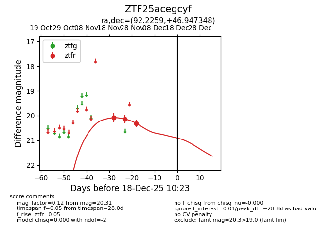
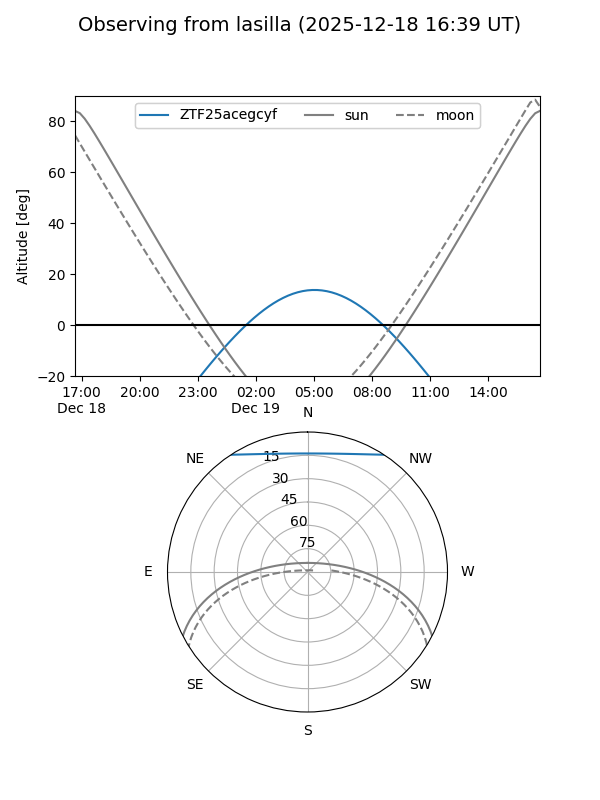
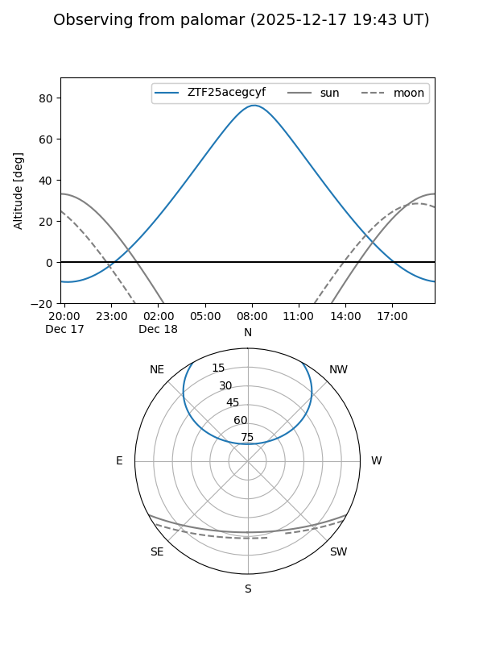

ZTF25acegcyf
Target ZTF25acegcyf at 2025-12-18 11:17
Aliases and brokers:
FINK: fink-portal.org/ZTF25acegcyf
Lasair: lasair-ztf.lsst.ac.uk/objects/ZTF25acegcyf
ALeRCE: alerce.online/object/ZTF25acegcyf
alt names
ZTF25acegcyf (ztf,fink_ztf)
Coordinates:
equatorial (ra, dec) = 92.2259,+46.94735
equatorial (HMS+DMS) = 06:08:54.21,+46:56:50.45
galactic (l, b) = (166.4017,+12.77284)
Photometry
last ztfr=20.31
3 ztfr detections
Lightcurve

Visibility


Additional plots